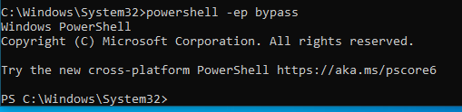

in windows 10
inside the folder containing powerview
#powersehll -ep bypass
-ep:Execution policy
can also write it as
#powershell -ExecutionPolicy bypass
must be in directory windows\system32 to execute this cmd

#. .\PowerView.ps1
space btwn . and .

#Get-NetDomain

#Get-NetDomainController

we get IP and name of Domain
#Get-DomainPolicy

#(Get-DomainPolicy)."systemaccess"

#Get-NetUser


similar to grep we have select
#Get-NetUser| select cn

#Get-NetUser| select samaccountname

#Get-UserProperty

#Get-UserProperty -Properties pwdlastset

for what passwd hasnt been chaged from a long time
#Get-UserProperty -Properties logoncount

accounts with 0 logins might be honepot accounts that might alert the system, so dont log into those
#Get-NetComputer

#Get-NetComputer -Fulldata

#Get-NetComputer -Fulldata|select operatingsystem

#Get-NetGroup

#Get-NetGroup -GroupName *admin*

#Get-NetGroupMember -GroupName "Domain Admins"

#Invoke-ShareFinder

#Get-NetGPO
GPO:Group Policies

#Get-NetGPO |select displayname, whenchanged